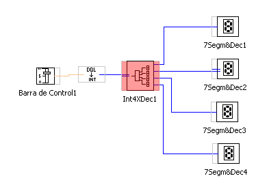
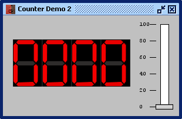

Funciones Digitales Digitales: CONVERTIDOR DE ENTERO A DIGITAL DE 4 DIGITOS
Esta es una función compleja digital que consiste en convertir un número entero en uno digital (4 digitos) que directamente se pueden conectra a cuatro displays.
Se puede utilizar como un instrumento indicador digital.
